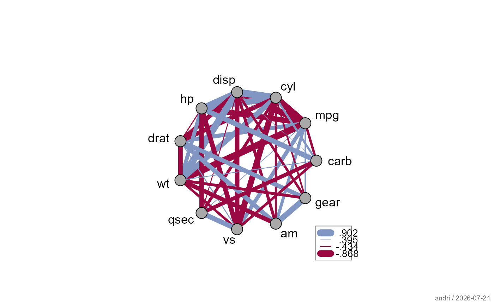

Replaces entries in a symmetric matrix (typically a correlation matrix)
with NA wherever the corresponding p-value exceeds a significance
threshold – retaining only the statistically supported associations.
Designed as a pre-processing step for plotWeb and
plotCor.
keepSig(
m,
p = NULL,
data = NULL,
sig.level = 0.05,
method = c("pearson", "spearman", "kendall"),
diag = TRUE
)Arguments
- m
a symmetric numeric matrix. Typically the output of
cor, but any symmetric matrix of effect sizes or association measures is accepted.- p
a matrix of p-values of the same dimension as
m. IfNULL(default), p-values are computed from pairwise correlation tests on the columns ofdata(requiresdata).- data
an optional numeric data frame or matrix. Used to compute
pwhenp = NULL. Ignored ifpis supplied.- sig.level
numeric; significance threshold. Entries where
p > sig.levelare replaced byNA. Default0.05.- method
character; the correlation test method passed to
cor.testwhen computing p-values fromdata. One of"pearson"(default),"spearman", or"kendall".- diag
logical; if
TRUE(default), the diagonal is kept as-is (typically 1 for correlation matrices). IfFALSE, the diagonal is also set toNA.
Value
matrix with the same dimensions and dimnames as m, with
NA wherever p > sig.level
See also
Examples
# compute p-values on the fly from the raw data
plotWeb(keepSig(cor(mtcars), data = mtcars))
 # stricter threshold
plotCor(keepSig(cor(swiss), data = swiss, sig.level = 0.01))
# stricter threshold
plotCor(keepSig(cor(swiss), data = swiss, sig.level = 0.01))
 # supply a pre-computed p-value matrix
m <- cor(mtcars)
p <- outer(
(vars <- colnames(mtcars)), vars,
Vectorize(function(v1, v2)
cor.test(mtcars[[v1]], mtcars[[v2]])$p.value)
)
dimnames(p) <- list(vars, vars)
plotWeb(keepSig(m, p = p))
# supply a pre-computed p-value matrix
m <- cor(mtcars)
p <- outer(
(vars <- colnames(mtcars)), vars,
Vectorize(function(v1, v2)
cor.test(mtcars[[v1]], mtcars[[v2]])$p.value)
)
dimnames(p) <- list(vars, vars)
plotWeb(keepSig(m, p = p))
